Behavior patterns
- Chain of responsibility
- Command
- Interpreter
- Iterator
- Mediator
- Memento
- Observer
- State
- Strategy
- Template method
- Non virtual interface
- Visitor
Chain of responsibility
Role
The Chain of Responsibility pattern works with a list of Handler objects that have limitations on the nature of the requests they can deal with. If an object cannot han- dle a request, it passes it on to the next object in the chain. At the end of the chain, there can be either default or exceptional behavior.
The diagram
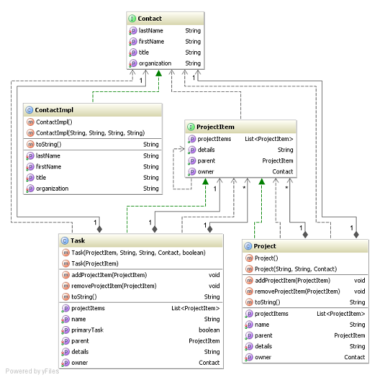
Contact interface

Contact implementation
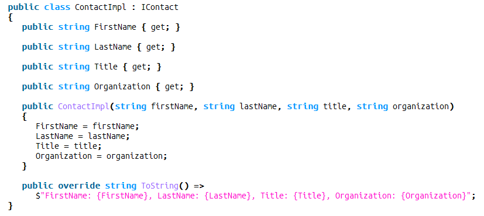
Project item interface
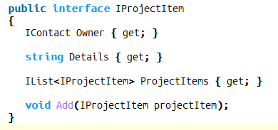
Project task
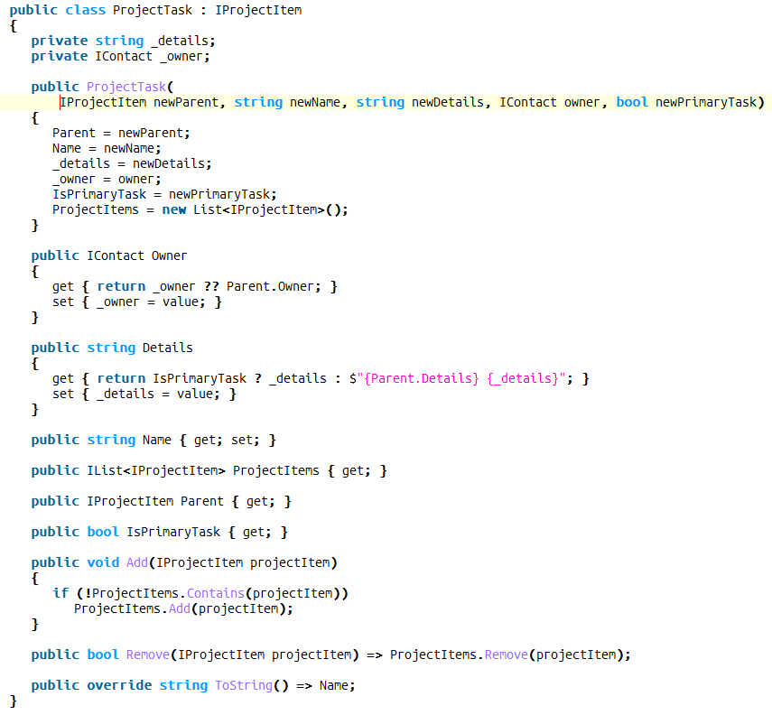
Application
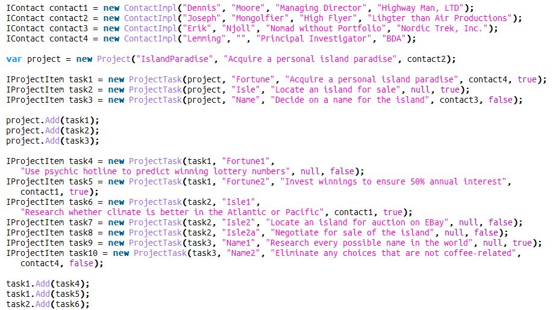
Command
Role
The Command pattern creates distance between the client that requests an opera- tion and the object that can perform it. This pattern is particularly versatile. It can support: • Sending requests to different receivers • Queuing, logging, and rejecting requests • Composing higher-level transactions from primitive operations • Redo and Undo functionality
The diagram

Saver interface

Command interface

Class User - who wants to call the command

Class User - who wants to call the command
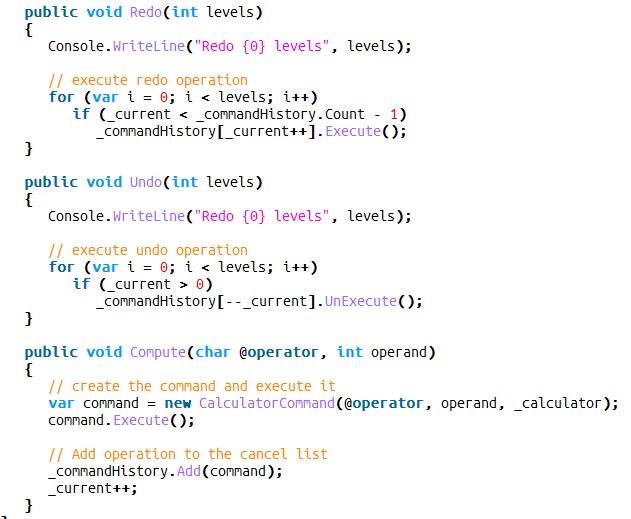
Calculator - the command receiver

Calculator - the command receiver

Command implementation
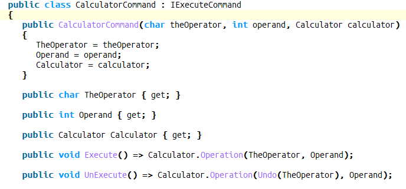
Command implementation

Application

Interpreter
Role
The Interpreter pattern supports the interpretation of instructions written in a lan- guage or notation defined for a specific purpose. The notation is precise and can be defined in terms of a grammar.
The diagram

Contact interface

Contact implementation
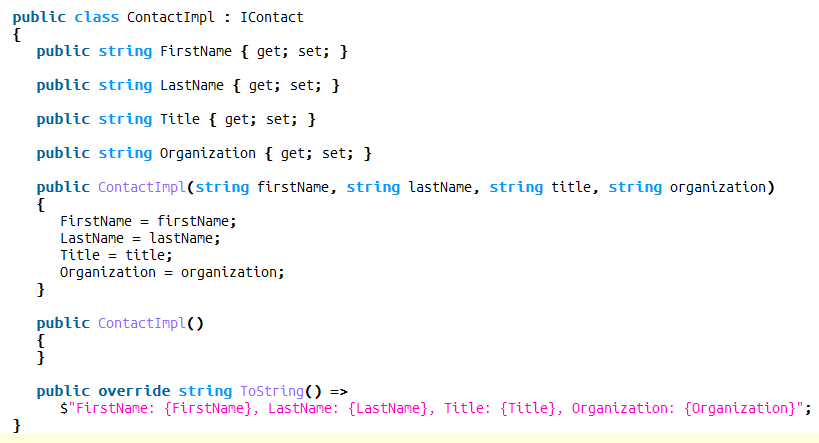
Context interface

Context implementation

Contact list
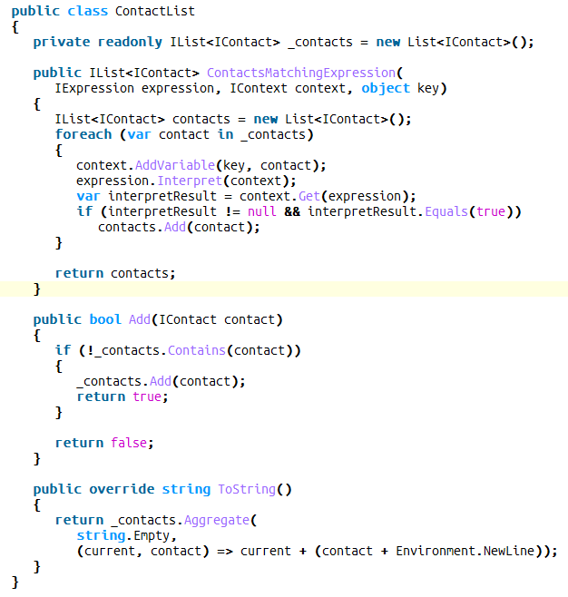
Expression interface

And Expression
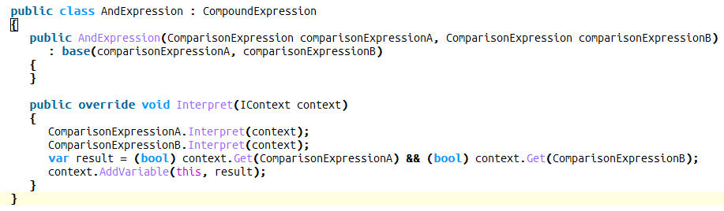
Comparison Expression
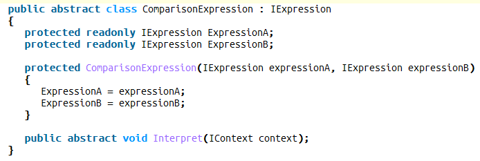
Constant Expression
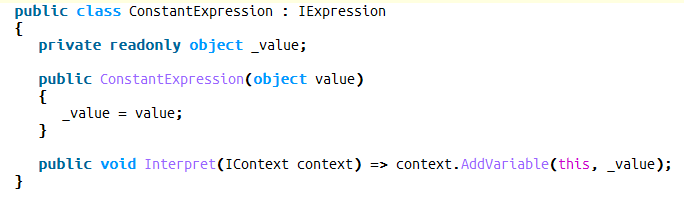
Compound Expression

Variable Expression

Or Expression
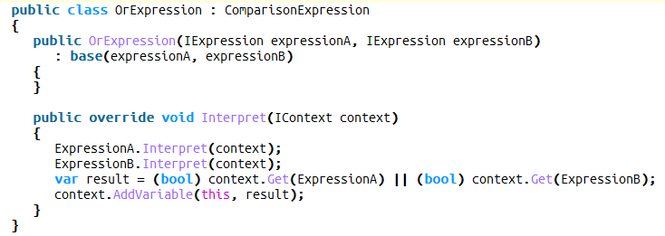
Equals Expression
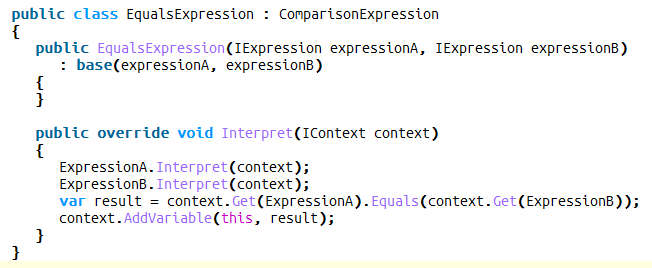
Contains Expression
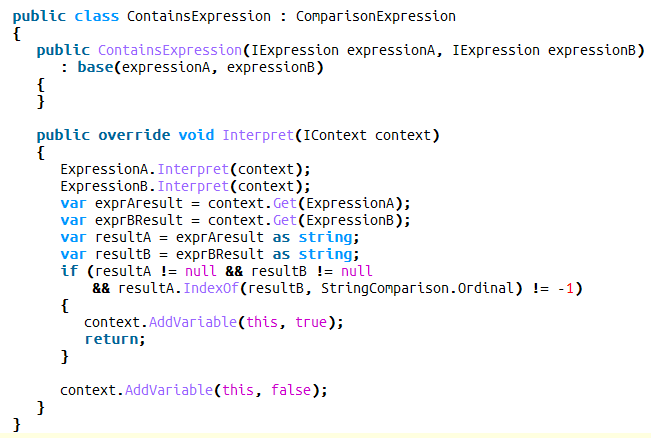
App

Iterator
Role
The Iterator pattern provides a way of accessing elements of a collection sequen- tially, without knowing how the collection is structured. As an extension, the pat- tern allows for filtering elements in a variety of ways as they are generated.
The diagram

Iterator interface

Iterator implementation
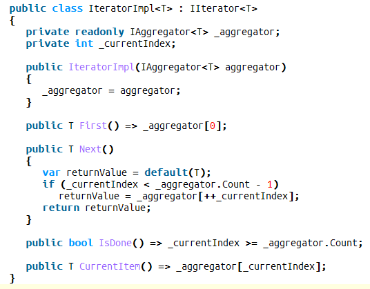
Aggregator interface
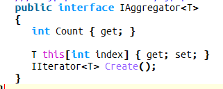
Aggregator implementation
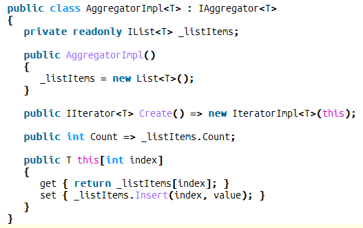
Application

Mediator
Role
The Mediator pattern is there to enable objects to communicate without knowing each other’s identities. It also encapsulates a protocol that objects can follow.
The diagram
Mediator interface
Colleague interface
Colleague Impl
Concrete Colleague 1
Concrete Colleague 2
Mediator impl
App
Memento
Role
This pattern is used to capture an object’s internal state and save it externally so that it can be restored later.
The diagram

Address interface
Address implementation

Address Book interface

Address Book impl

Address Book impl

Address Book impl

Contact interface

Contact impl
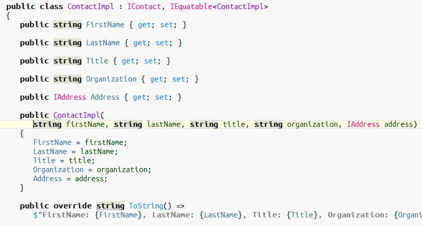
Contact impl

App
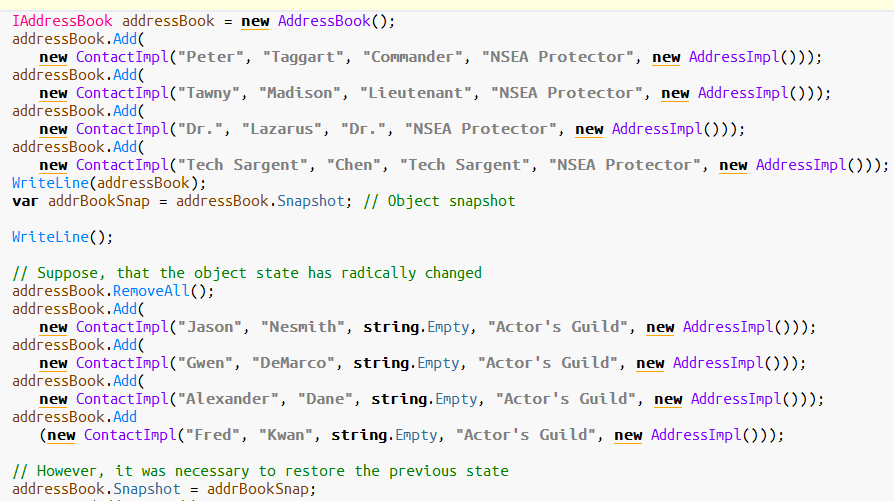
Observer
Role
The Observer pattern defines a relationship between objects so that when one changes its state, all the others are notified accordingly. There is usually an identifi- able single publisher of new state, and many subscribers who wish to receive it.
The diagram
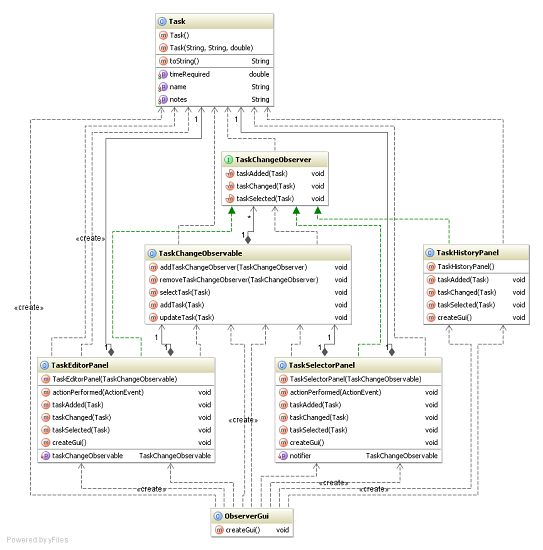
Observer interface

Subject interface

Observer impl

Subject impl

Subject impl
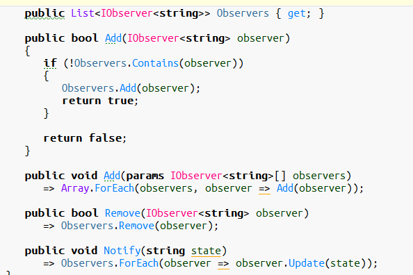
Simulator

App

Out of the box observer
Observer impl
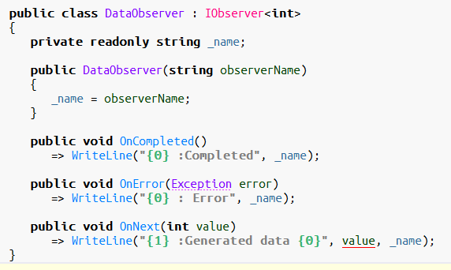
Observable impl

Observable impl
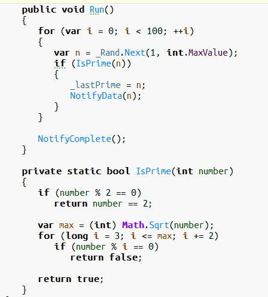
App

State
Role
The next pattern in this group, the State pattern, can be seen as a dynamic version of the Strategy pattern. When the state inside an object changes, it can change its behavior by switching to a set of different operations. This is achieved by an object variable changing its subclass, within a hierarchy.
The diagram
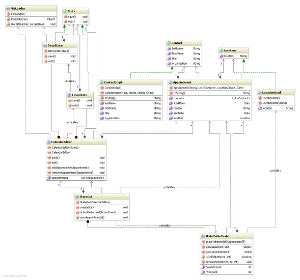
Automat State interface
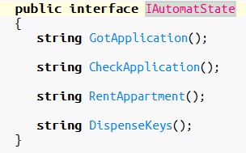
Automat interface

Automat Impl

Waiting State
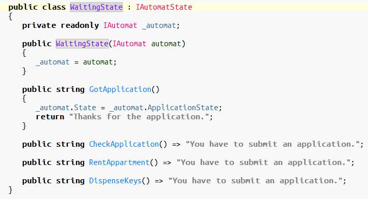
Got Application State

Fully Rented State

Apartment Rented State
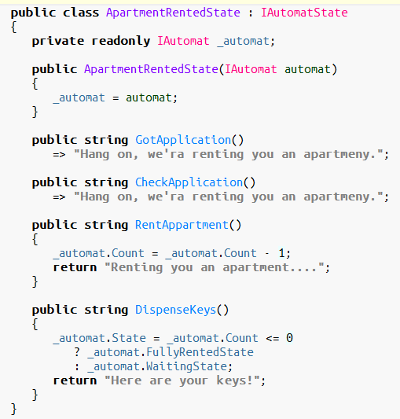
App

Strategy
Role
The Strategy pattern involves removing an algorithm from its host class and putting it in a separate class. There may be different algorithms (strategies) that are applicable for a given problem. If the algorithms are all kept in the host, messy code with lots of con- ditional statements will result. The Strategy pattern enables a client to choose which algorithm to use from a family of algorithms and gives it a simple way to access it. The algorithms can also be expressed independently of the data they are using.
The diagram

Strategy interface

First Strategy

Second Strategy

Strategy Context
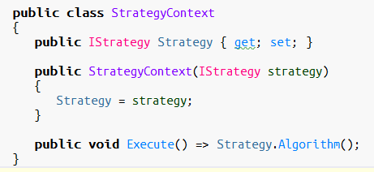
App

Template method
Role
The Template Method pattern enables algorithms to defer certain steps to sub- classes. The structure of the algorithm does not change, but small well-defined parts of its operation are handled elsewhere.
The diagram

Project item
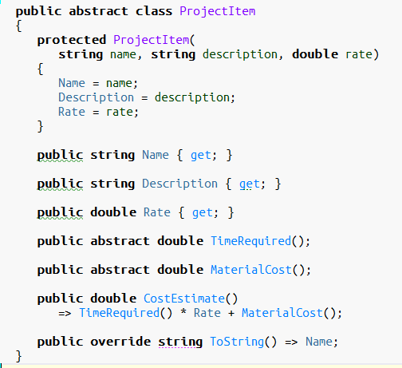
Deliverable
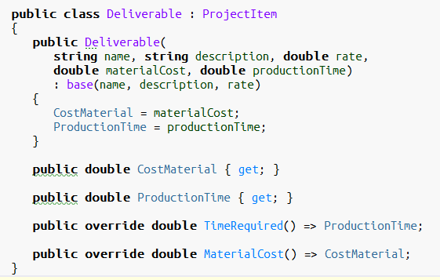
Task